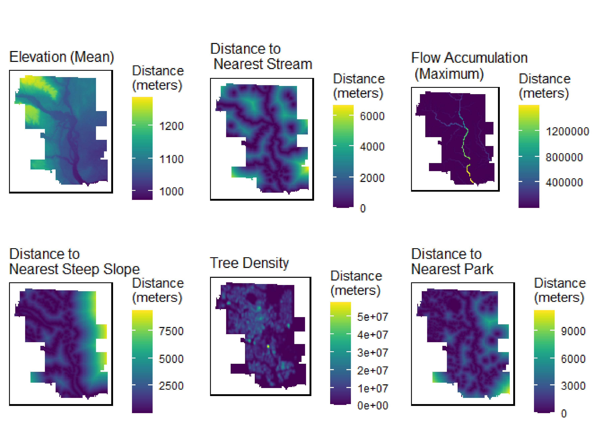
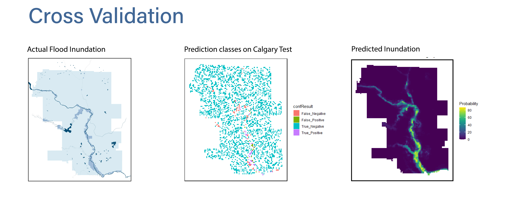
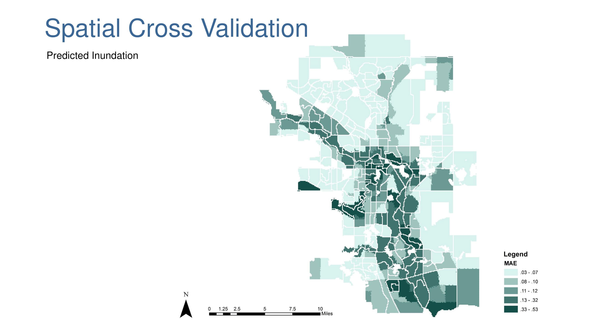

Predicting Flood Inundation In Calgary Using Logistic Regression
Flooding is a common type of natural disaster which could cause huge economic and social damages. In this project, we built a model using logistic regression to predict the flooding inundation of Calgary.
Calgary experienced a major flood in 2013. During that disaster, five people were confirmed dead as a direct result and over 100,000 people were displaced throughout the region. The Total damage estimates exceeded C$5 billion and in terms of insurable damages, made the 2013 Alberta floods the costliest disaster in Canadian history at $1.7 billion. Therefore, it is important to predict flooding locations and increase the awareness of flood among residents.
In the feature engineering phase, we took four different categories of variables, including Geographical, spatial, social and census data as predictive variables to capture the characters of flooding locations. For instance, we included Elevation, Slope, and Landcover to represent the geographical condition of Calgary.
After modeling the logistic regression. Our AUC was 0.91, which indicates that our model is very good at discriminating between flooded and non-flooded pixels. We also performed a spatial cross-validation and mapped the mean absolute errors in each neighborhood. Mean Absolute Errors are lower in neighborhoods that were further from the actual inundation sites and higher near the flooding sites. We hoped that we were predicting better in neighborhoods that were closer to the inundation site, but we still value that we are over predicting in these neighborhoods because it is better to be prepared for an even more catastrophic flood.
We also applied this model to Minneapolis, which is a comparable city with similar geographical and hydrological conditions to examine the generalizability of the model. It is clear to see how much distance to water was weighed in making predictions. When water bodies are mapped, the predicted probability of inundation obviously decreases as a function of distance to the water bodies. Although in theory, this makes sense given how flooding works, it may have reduced the predictive power of other variables which could be very useful in predicting the nuances of flood inundation. We would work on that limitation to improve our model in the future.